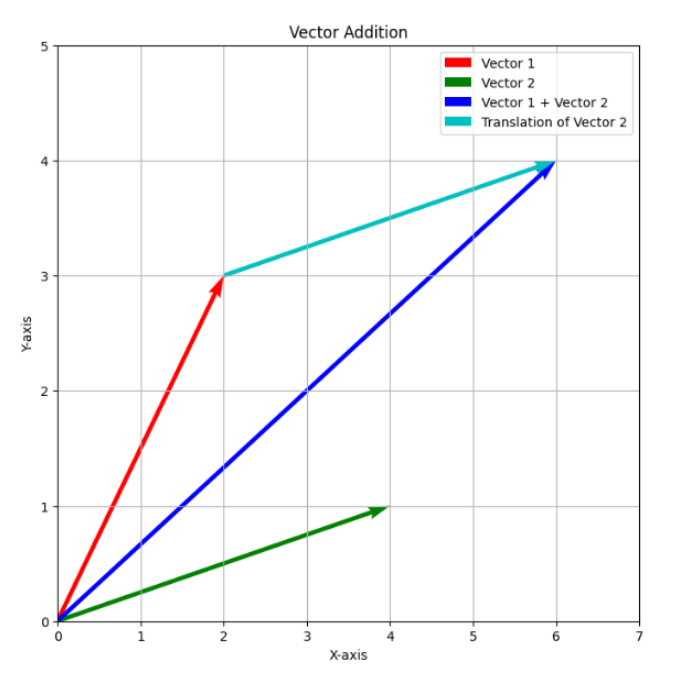
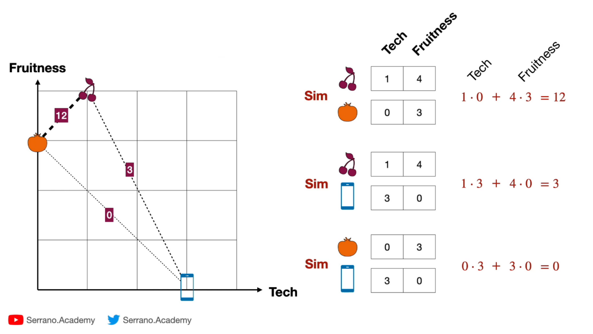
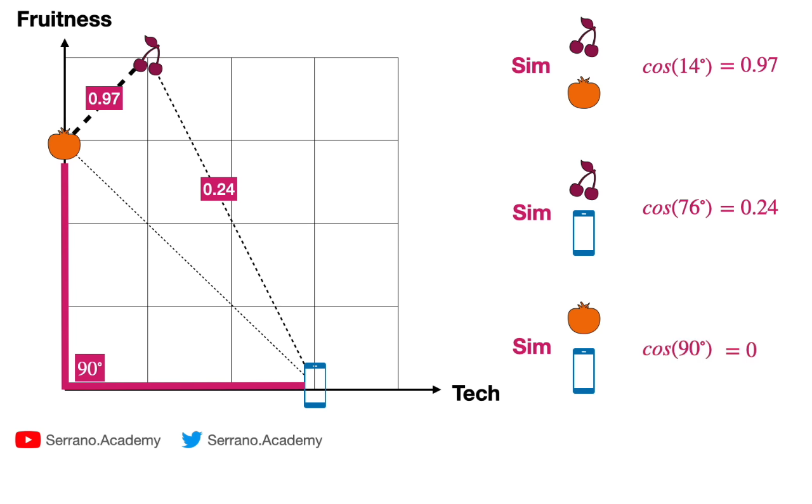
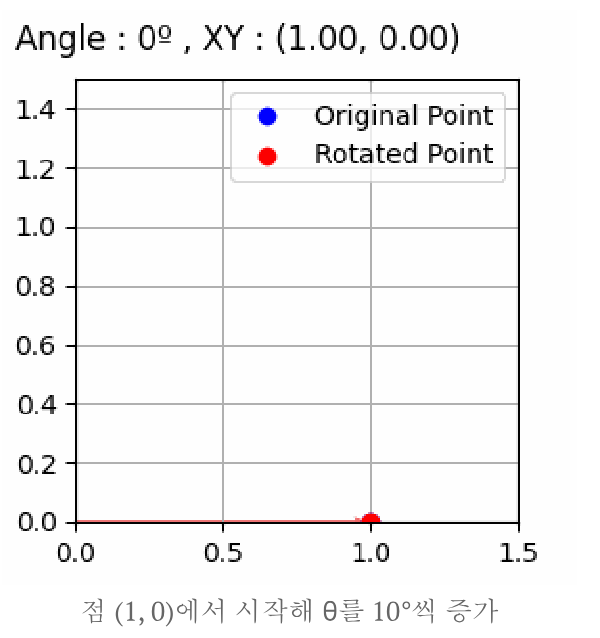
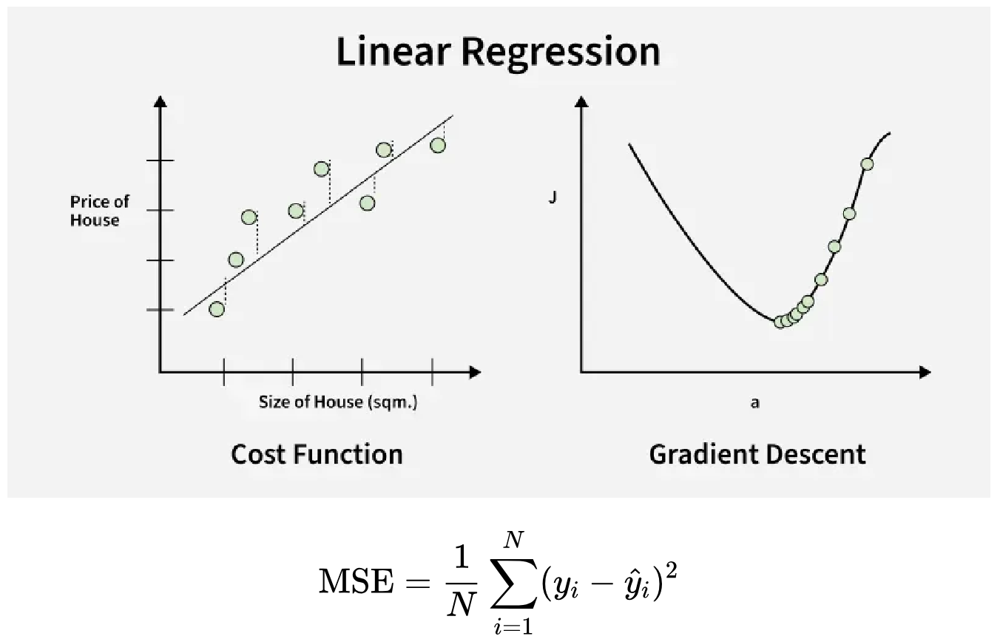
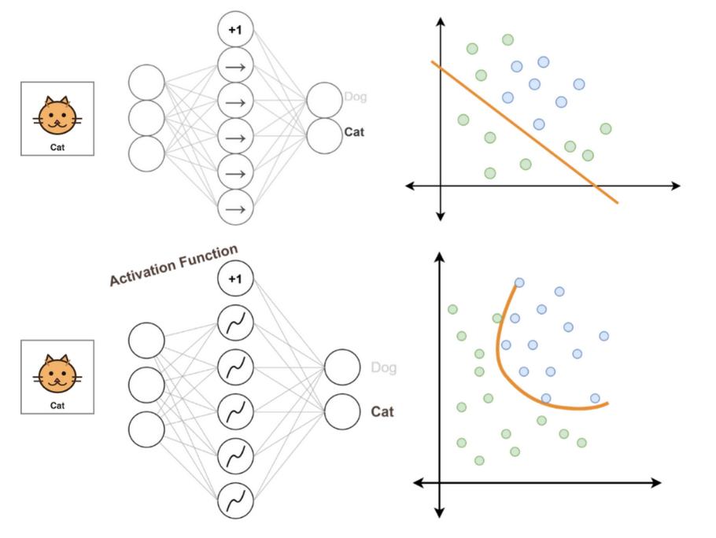
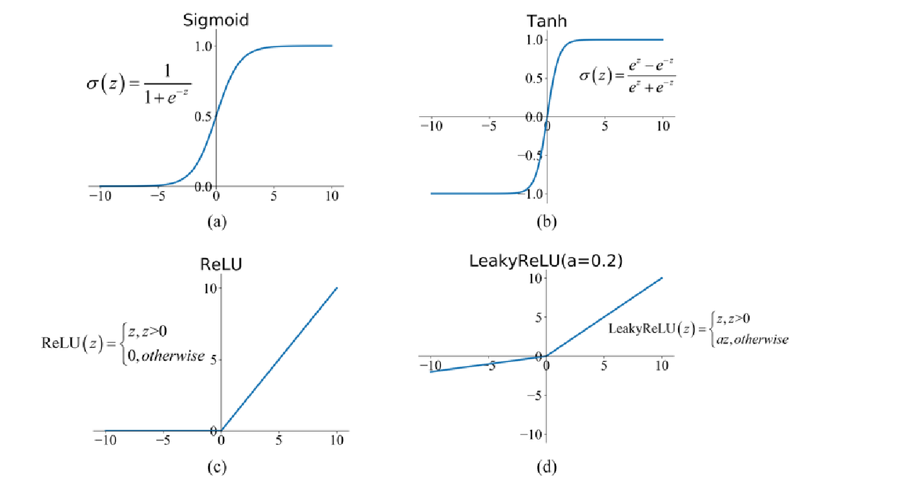
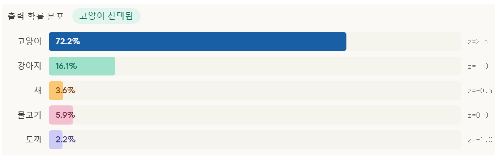

02. 벡터·행렬과 확률 변환
LLM은 숫자 목록으로 표현한 입력을 변환하고, 후보별 점수를 구한 다음 확률로 바꾼다. 이 장에서는 목록 → 가중합 → 비선형 변환 → 확률을 손으로 계산한다. 사칙연산과 좌표를 알면 시작할 수 있다. 처음에는 1~6절을 순서대로 읽고, 복습할 때에는 끝의 확인 문제에서 시작하자. 학습 목표는 내적과 코사인을 구별하고, 행렬의 출력 크기를 예측하며, softmax의 확률을 계산하는 것이다.
원문 범위는 파일 순서 31~45쪽이다. 원문은 슬라이드에서 확인한 내용, 보충은 독립 학습을 위한 예제·조건, 정정은 계산이나 해석의 수정이다. 이 구분은 다음 세 장에서도 같다. 아래의 추가 숫자는 교육용 예이며 실제 모델 측정값이 아니다.
1. 벡터는 값을 묶고, 덧셈은 성분별로 한다
스칼라는 숫자 하나, 벡터는 순서가 있는 숫자 목록, 행렬은 행과 열을 가진 숫자 표다. 이 장에서 텐서는 이러한 배열을 여러 축으로 확장한 표현이다. 3성분 벡터의 성분 수 3과 3개 축을 가진 3차 텐서를 혼동하지 않는다. 벡터 (2,3)은 좌표 평면에서 원점에서 (2,3)으로 향하는 화살표로 그릴 수 있다. 데이터에서 각 성분이 무엇을 뜻하는지는 별도의 정의가 필요하다.
원문 그림에서 빨간 벡터를 이동한 초록 벡터와 이어 보자. 끝점은 어디인가?

빨강 (2,3)에 초록 (4,1)을 더하면 파랑 (6,4)다. 청록 화살표는 초록 벡터를 (2,3)에서 시작하도록 옮긴 것으로 길이와 방향은 같다. 덧셈은 같은 좌표계·같은 성분 수에서 (2+4,3+1)로 계산한다. 축의 단위가 다르면 각 성분의 단위를 유지한다. 크기나 의미가 다른 목록을 임의로 더하지 않는다.
2. 내적은 길이와 방향을, 코사인은 방향을 비교한다
내적 a·b=Σᵢaᵢbᵢ는 대응 성분끼리 곱한 뒤 더한 스칼라다. 기하학적으로 a·b=||a|| ||b|| cosθ이며 ||a||=√Σᵢaᵢ²는 유클리드 길이다. 두 영벡터가 아닌 벡터가 이루는 각도가 예각이면 양수, 직각이면 0, 둔각이면 음수다. ‘같은 방향/반대 방향’은 그 양끝 사례다.
원문은 가상의 두 특징 Tech와 Fruitness로 체리 (1,4), 오렌지 (0,3), 휴대전화 (3,0)를 놓는다. 그림의 선은 물체 간 이동거리를 재는 선이 아니라 비교하는 쌍을 표시한다.

오른쪽 계산을 읽으면 1×0+4×3=12, 1×3+4×0=3, 0×3+3×0=0이다. 이는 사람이 정한 특징 예시이며 실제 의미 임베딩의 측정값이 아니다. ‘내적이 크다’는 길이도 크다는 뜻일 수 있으므로 의미 유사성만의 증거로 쓰면 안 된다.
코사인 유사도 cos(a,b)=(a·b)/(||a||||b||)는 길이를 나누어 방향만 남긴다. 같은 세 쌍을 길이로 나누면 무엇이 달라지는지 보자.

체리 길이는 √17, 오렌지는 3, 전화는 3이다. 따라서 12/(3√17)=0.9701, 3/(3√17)=0.2425, 마지막은 0이다. 그림의 14°, 76°는 반올림한 각도다. 출처 표시는 원문 그림의 Serrano.Academy를 보존했다. 연결 영상의 발언은 재구성하지 않았다.
보충 예제: a=(1,2), b=(2,0)이면 내적 2, 코사인 1/√5≈0.4472다. b를 (6,0)으로 바꾸면 내적 6, 코사인은 같다. 각 벡터를 자기 길이로 나눈 단위 벡터끼리는 길이가 모두 1이라 내적과 코사인이 같다. 영벡터는 분모가 0이므로 코사인이 정의되지 않는다. 정규화하지 않은 벡터에서 두 값을 같다고 둘 수 없다.
3. 행렬은 어떤 연산을 하느냐에 따라 결과가 달라진다
A=[[1,2],[3,4]], 단위행렬 I=[[1,0],[0,1]]로 시작한다. 원문의 요소별 곱 A*I는 같은 위치끼리 곱하여 [[1,0],[0,4]]다. 행렬 곱 A@I는 앞의 행과 뒤의 열을 내적하므로 A 그대로다. @와 *는 이 문서의 구분 표기이며 다른 수학 문헌에서는 기호 관례가 다를 수 있다.
행렬 곱의 크기 규칙은 [m,n]@[n,p]→[m,p]다. 가운데 차원은 내적으로 더하는 성분 수라서 같아야 한다. 보충으로 B=[[2,0],[1,3]]를 사용하면:
AB[1,1]=1×2+2×1=4 AB[1,2]=1×0+2×3=6
AB[2,1]=3×2+4×1=10 AB[2,2]=3×0+4×3=12
AB=[[4,6],[10,12]]
A*B=[[2,0],[3,12]]
BA=[[2,4],[10,14]] (일반적으로 AB≠BA)
덧셈도 같은 위치끼리 하므로 원문의 A+[[10,20],[30,40]]=[[11,22],[33,44]]이다. 전치 Aᵀ는 행과 열을 맞바꾸어 [[1,3],[2,4]]가 된다. 일반적으로 2×3 표는 전치하면 3×2다. 여기서는 자동 크기 확장(broadcasting)을 사용하지 않는다.
회전 행렬은 행렬이 숫자 표 이상의 변환이라는 것을 보여준다. 열벡터에 왼쪽에서 곱할 때 반시계 회전은 R(θ)=[[cosθ,-sinθ],[sinθ,cosθ]]다.
[x',y']ᵀ = R(θ)[x,y]ᵀ
x'=x cosθ-y sinθ
y'=x sinθ+y cosθ
θ=90°, (x,y)=(1,0) → (0,1)
원문의 회전 그림에서 실제로 보이는 각도와 범례를 확인하자.

현재 프레임은 0°라 두 점이 겹친다. 원문 캡션은 10°씩 증가한다고 안내하지만 PDF 안에서 모든 프레임을 확인한 것은 아니다. 직접 90°를 대입하면 회전을 확인할 수 있다. 회전은 길이를 보존한다. 이후 행벡터 xW를 사용할 때 같은 변환을 나타내려면 행렬을 전치해야 한다. 원문 그림의 출처 표기는 xoft.tistory.com/109이며 이 교재의 유도는 위 식으로 완결된다.
4. 가중합은 예측을 만들고, 손실은 예측의 오차를 잰다
한 뉴런은 입력 성분 xᵢ를 가중치 wᵢ와 곱해 z=Σᵢwᵢxᵢ+b를 만든다. 가중치는 각 입력이 출력에 기여하는 정도, 편향 b는 입력과 별도로 더하는 값이다. x=(1,2), w=(2,-1), b=0.5라면 z=0.5다. 원문 39쪽의 Wᵀx+b는 열벡터 관례이며, 표기보다 각 항의 크기를 먼저 맞추어야 한다. 편향이 있으면 엄밀히 아핀 함수이지만 신경망에서는 관례상 선형층이라고 부른다.
원문의 y는 실제값, ŷ는 예측값, ȳ는 평균값이다. 세 값은 다른 역할이다. 평균제곱오차 MSE=(1/N)Σᵢ(yᵢ-ŷᵢ)²는 N개 표본의 오차 제곱 평균이다. y=(2,4), ŷ=(1,6)이면 (1+4)/2=2.5다.
아래 두 그래프의 가로축이 서로 다르다는 점을 먼저 보자.

왼쪽은 입력 크기와 실제 가격을 비교하고, 점에서 선까지의 세로 차이가 예측 오차다. 오른쪽은 데이터를 그리는 대신 파라미터 a를 바꿀 때 손실 J가 어떻게 변하는지 그린다. 경사하강법은 이 손실을 낮추는 방향으로 파라미터를 움직인다. 입력 축을 따라 움직이는 일이 아니다. 실제 갱신 계산은 다음 장에서 한다.
5. 활성화는 선형층 사이에 비선형성을 넣는다
아핀층만 여러 번 연결하면 W₂(W₁x+b₁)+b₂=(W₂W₁)x+(W₂b₁+b₂)처럼 하나의 아핀층으로 합쳐진다. 층 수만 늘려서는 이 형태를 벗어나지 못한다. 활성화함수는 가중합 z를 다른 값 h=f(z)로 바꾸어 비선형 패턴을 표현하게 한다.
원문 그림에서는 직선 경계와 휘어진 경계가 어떤 점들을 분리하는지 비교한다.

왼쪽 입력은 고양이, 출력은 Dog와 Cat으로 표시되어 있다. 오른쪽 산점도는 개념 그림이며 실제 정확도 수치는 없다. 아래쪽 곡선은 더 복잡한 구분을 표현할 수 있다는 뜻이지 비선형 함수를 넣으면 반드시 정확해진다는 보장은 아니다.
다음 네 그래프는 가로축 입력과 세로축 출력을 비교한다. 음수 입력의 출력부터 보자.

| 함수 | 정의와 범위 | z=0일 때 | 역할과 한계 |
|---|---|---|---|
| sigmoid | 1/(1+e^(-z)), 0과 1 사이 |
0.5 | 한 점수를 부드럽게 제한한다. 양끝에서 기울기가 작다. |
| tanh | (e^z-e^(-z))/(e^z+e^(-z)), -1과 1 사이 |
0 | 부호를 유지하며 제한한다. 양끝에서 포화한다. |
| ReLU | max(0,z) |
0 | 양수는 통과시키고 음수는 0으로 만든다. 음수 구간의 기울기는 0이다. |
| LeakyReLU | 양수는 z, 음수는 αz; 원문 α=0.2 | 0 | 음수에도 작은 기울기를 둔다. α는 설정값이다. |
보충 활동: 입력 -2, 2에서 ReLU는 0, 2이고 LeakyReLU(0.2)는 -0.4, 2다. sigmoid(-2)≈0.1192, sigmoid(2)≈0.8808이다. sigmoid 미분은 σ(z)(1-σ(z))이며 0에서 0.25다. ReLU의 0 지점은 수학적으로 미분 불가능하므로 구현은 그 지점의 규칙을 정한다. 모든 활성화 출력을 자동으로 ‘정답일 확률’이라고 해석하지 않는다. 확률 해석에는 학습 목표와 출력 구성도 필요하다.
6. 지수·로그를 거쳐 점수를 확률로 바꾼다
지수함수 e^z는 실수 점수를 양수로 만든다. 원문 점수 10, 8, 1은 각각 약 22026.47, 2980.96, 2.718이 된다. 점수 차이 2가 지수값의 비 e²≈7.39로 바뀐다. 큰 지수는 수치 범위를 넘을 수 있다. 자연로그 ln은 지수함수의 역함수로, 양수 a,b에서 ln(ab)=ln a+ln b, ln(a/b)=ln a-ln b다. d(e^z)/dz=e^z, d(ln z)/dz=1/z이며 로그 미분은 z>0에서 쓴다.
정정·조건: 로그를 취했다고 모든 계산이 무조건 빨라지는 것은 아니다. 긴 확률 곱을 로그의 합으로 다루면 매우 작은 수가 0으로 떨어지는 언더플로 문제를 줄이는 것이 핵심이다. ‘틀릴 때 강한 피드백’은 로그 자체보다 정답 확률에 대한 손실 -ln p의 성질이다. 이 손실은 4장에서 계산한다.
logit은 정규화 전의 점수다. Softmax는 K개 점수를 함께 바꾼다.
pᵢ = exp(zᵢ) / Σⱼ exp(zⱼ)
z=(ln2,0) → exp(z)=(2,1) → p=(2/3,1/3)
모든 확률이 양수이고 합이 1이 된다. 하나의 점수를 바꾸면 공통 분모를 통해 다른 후보의 확률도 달라진다. 같은 상수 c를 모든 점수에서 빼면 분자·분모의 e^(-c)가 약분된다. 계산할 때 c를 최댓값으로 잡으면 큰 지수 계산을 피할 수 있다. 유한한 실수 logits를 전제하며 결측값·무한대 입력은 별도 처리가 필요하다.
원문 45쪽에서 값과 후보의 대응을 읽자.

다섯 지수값의 합으로 나누면 고양이 약 0.7219, 강아지 0.1611, 새 0.0359, 물고기 0.0593, 토끼 0.0218이다. 그림의 ‘선택됨’은 최대 확률을 선택하는 예시이며 softmax 자체는 확률까지만 계산한다.
sigmoid를 각각 적용하면 약 (0.9241,0.7311,0.3775,0.5000,0.2689)로 합이 1이 아니다. 여러 라벨의 각 확률을 따로 표현할 때 이 차이가 중요하다. 정정: 45쪽 하단 sigmoid 화면은 페이지 밖으로 잘렸으며 보이는 고양이 72.2%는 σ(2.5)=92.4%와 일치하지 않는다. 누락된 화면을 추정 복원하지 않고 이 계산으로 대체한다.
두 클래스 softmax에서는 p₁=e^z₁/(e^z₁+e^z₂)=1/(1+e^(-(z₁-z₂)))=σ(z₁-z₂)다. sigmoid 입력은 첫 점수 하나가 아니라 두 점수의 차이다. 예를 들어 (2,2)의 softmax는 (0.5,0.5)이지만 각 점수의 sigmoid는 모두 약 0.8808이다.
7. 확인 질문과 해설
먼저 계산하고 아래 해설과 비교하자. 틀리면 괄호 안 절로 돌아간다.
(1,2)와(6,0)의 내적과 코사인은? (2절)[2,3]@[3,4]와[2,3]@[2,4]중 가능한 것은? 출력 크기는? (3절)- 활성화 없이 아핀층 두 개를 쌓으면 왜 한 아핀층으로 쓸 수 있는가? (5절)
- logits
(0,0,0)의 softmax와 각각의 sigmoid는? (6절) (ln2,0)에 같은 상수 100을 더하면 softmax는 어떻게 되는가? (6절)
해설: 1은 내적 6, 코사인 1/√5≈0.4472다. 2는 첫 곱만 가능하고 [2,4]가 된다. 3은 행렬 곱의 결합법칙과 분배법칙으로 가중치와 편향을 합칠 수 있기 때문이다. 4는 softmax 각각 1/3, sigmoid 각각 1/2이다. 5는 공통 지수 인자가 약분되어 (2/3,1/3) 그대로다. 수학적 동일성과 부동소수점 계산의 안정성은 별개라 실제로는 최댓값을 빼는 방법을 쓴다.
페이지별 상세 읽기
31 도입 · 32 덧셈 · 33 내적 부호 · 34 내적 예시 · 35 코사인 · 36 단위벡터 · 37 행렬 · 38 회전 · 39 선형층 · 40 MSE · 41 비선형성 · 42 활성화 비교 · 43 지수·로그 · 44 softmax 유도 · 45 확률 비교